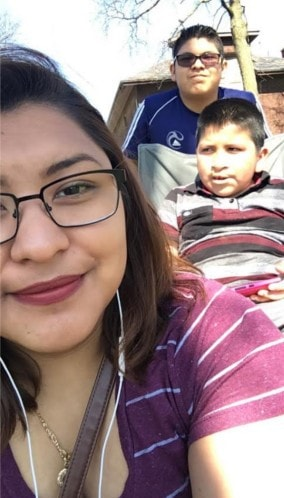
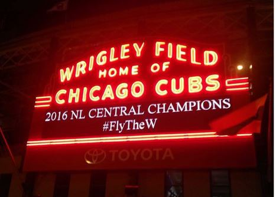
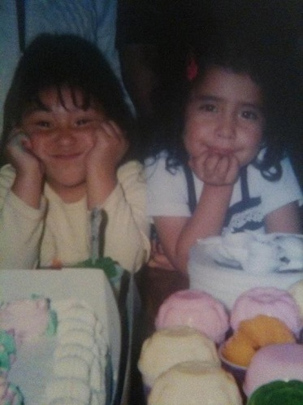

Here is a page where you can find out more about my background. I have included some
pictures and videos, enjoy!
Where it all began...
I was born in Coacoatzintla, a small "pueblo" in Veracruz, Mexico on the 23rd of December.
I don't remember much of my life there since I came to the United States when I turned 3.
What I do remeber, however, is that my grandparents had a huge tree next to their house.
I also remeber my grandfather building a swing in that tree, just for me! When I turned
a year old, my parents decided to come to the States to have more work and provide me
a better life. However, they had to leave me behind with my grandparents because there
were a lot of risks involved if I tagged along. I stayed with my grandparents a little
after my third birthday. Then my mom had had enough of the distance and sent my dad back
to Mexico to get me and bring me to the United States.
Life in the States
Once I arrived in the States, I met my new baby brother Erik. Again, since I was
young, I don't really remember much of when I arrived. However, my mom always tells
me stories about how I wanted everything and how I wnated to see everyone. At the time
of my arrival, my parent had bought a new house -- which is the one we stil live in today.
I had to share a room with my brother since there were some uncles and aunts that were
also living with us. Life went on pretty smoothly after that, I went to school with my
brother, we had lots of family events, we traveled, and by 2006 I had another little
little brother, Edwin. After Edwin was born, everything was practically the same. Still
went to the same school, except Edwin was also going now, and around 2009 I finally
had my own room. I was very happy about that, but Erik not as much since he now had to
share with Edwin --and he still does to this day.

My brothers and I
Erik and I when we were little
My life today
Nothing has really changed from that. We still live in the same house, Edwin
is still in the same school, Erik goes to Curie High School, and I go to college at
Illinois Tech. My parents work full time --my mom works two jobs-- and I am in the
process of applying for a job as well. Being the oldest of three has tought me a lot
about setting examples for my brothers as well as learn how to be responsible. I am
helping Erik with picking out colleges and majors that he's concidering and I am helping
Edwin with his elementary schoolwork. I am very grateful that my parents had the opporunity
to bring me to the United States and allow me to have the opportunities that I have.
Quick Facts About Me:
I've lived in Chicago for the past 16 years, the first three were spent in Mexico
The Bean at night
I love the Chicago Cubs! I have attended 7 regual season games this year!

Cubs are NL Division Champs!
Video of Cubs win -- 5-2 -- on the 19th of September agains the Cincinnati Reds
I have a cousin who was born the same day I was, except I'm older than her
by 12 hours!

My couin and I at our birthday party
I did stained glass in high school for around 3 years
I completed more than 20 stained glass peices over 3 years
I collect movie stubs. I have over 100 stubs, the first dating back to 2009!
I took 4 years of French in high school, but I've forgoten most of it
In high school I was a part of the softball team, I played second base for two seasons